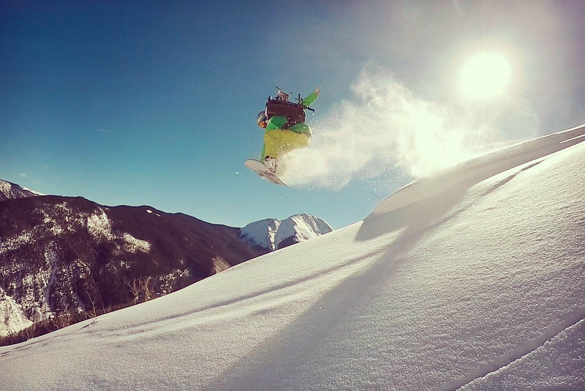
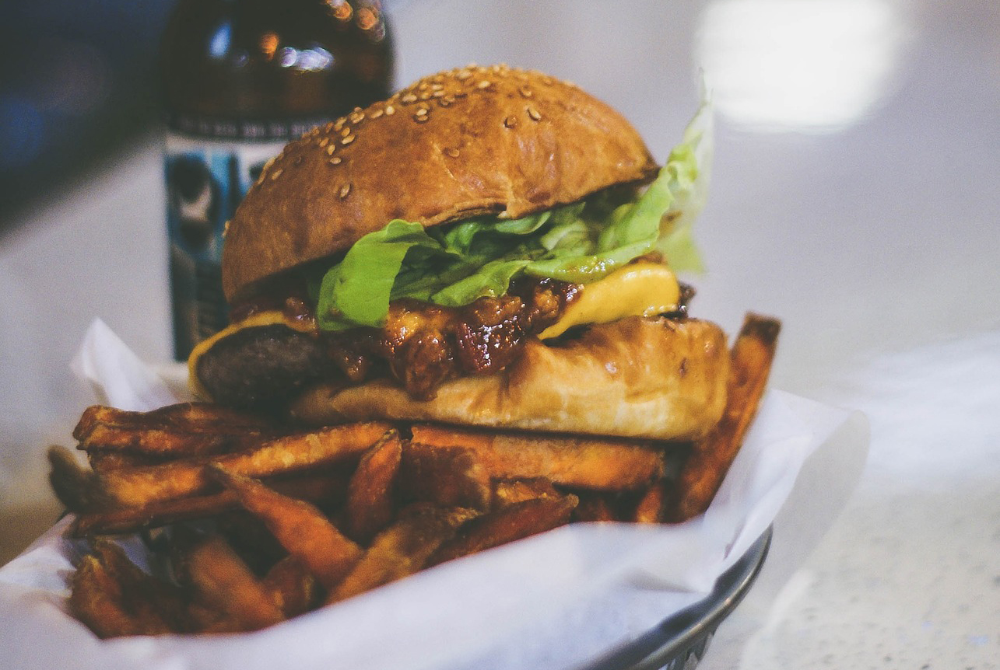
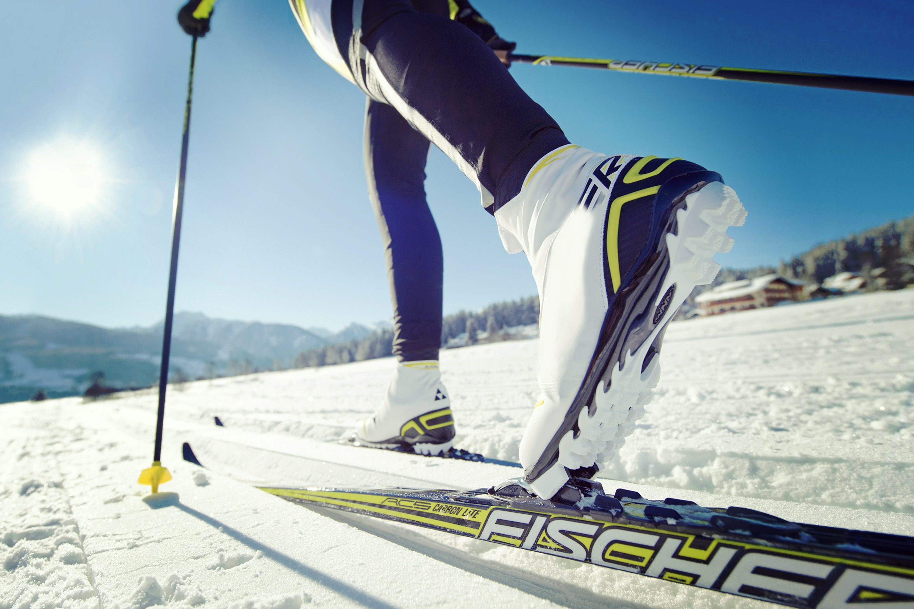
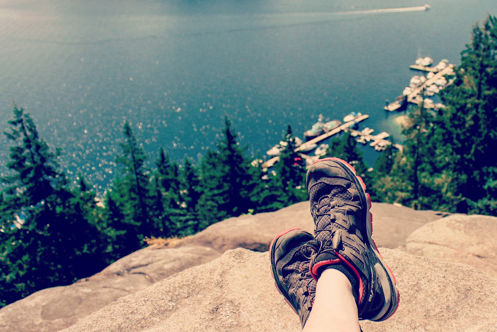
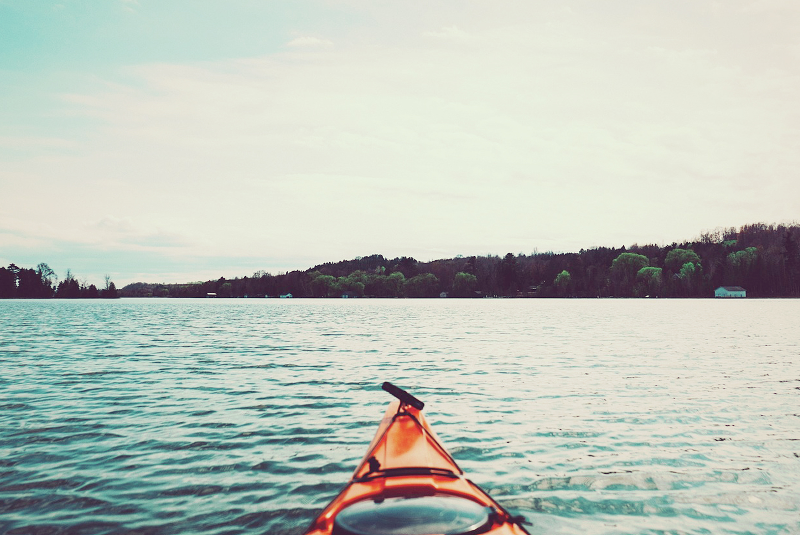

Ski & Board
Sometimes you just gotta strap a board to your feet and send yourself hurtling down a snow-covered mountain.

Apres Ski
You think Tahoe climbs into a sleeping bag when the sun goes down? Think again.

Nordic Festival
The days are hot and sunny and the nights are cool with that perfect temperature for sleeping in a tent.

Tahoe in Summer
The days are hot and sunny and the nights are cool with that perfect temperature for sleeping in a tent.

Hiking
There are so many beautiful hikes around the lake in winter and summer. Choose from our top 50 hikes.

Kayaking
Besides being on a boat, the best way to explore the lake is on a kayak, canoe or stand up paddleboard.